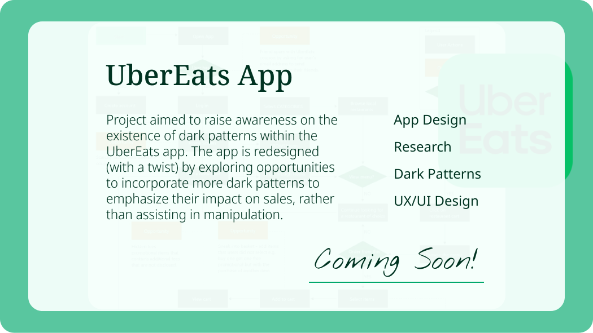
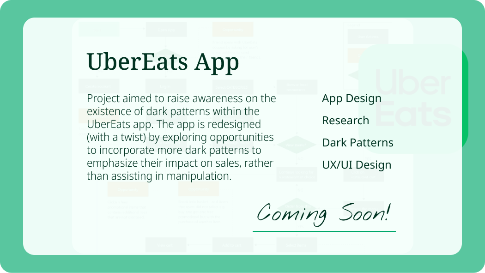

Hey there,
I'm Jade!
My mission? Crafting user-friendly
solutions and
creating meaningful digital experiences that
leave a lasting impact.
I'm an Interaction Designer with a
sprinkle of Social Work heart and
a dash of Customer Service soul!

I bring a one-of-a-kind perspective to my design work, infusing each
project with a touch of sparkle and shine, all while fueled by an
obsession for crafting user-friendly solutions.
Creative problem-solving and empathy are my superpowers, and I
firmly believe that continuous learning adds depth and meaning to
both life and designs.
I'm on a mission to sprinkle a little excellence into everything I
do.
Let’s make magic together!

A glimpse of
Design Magic


School Messenger App
A redesign project that focused on enhancing inclusivity and accessibility within this communication app to
maintain
seamless interactions between schools - educators - parents.


Willow’s Rest Green Burial
Willow's Rest Green Burial offers a natural and eco-friendly alternative for final resting places at the City of Niagara
Falls Burial Services, while promoting sustainability and preservation of nature.
 
